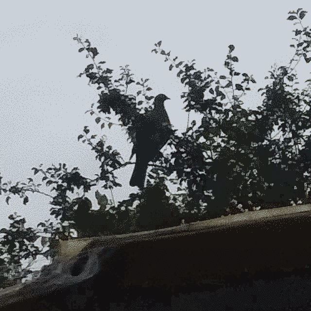

I thought I’d start with a quick rundown of the structures on the property.
Firstly there is the House. My sister in law and her husband live in the house and it should not be confused with the main structure the House Bus, (sometimes called the house) where my parents in law live but again we do not sleep in there. We sleep in the Shed, which doesn’t have any tools in it, and we do not keep our stuff in it. There is the Garage, with no vehicles but a lot of tools in it, which sits next to the Caravan (sometimes called the shed) where we keep all our stuff. This is not our caravan but my father in law’s. Finally there is the carport, which is actually the tunnel house (to differentiate it from the carport beside the house) - though it is not the same as the actual tunnel house which we call the glass house - under which stays no cars but the other Caravan - not my father in law’s one but our one.
This week we focused on repairing the roof. This started with us removing the roof, not the real one but the secondary awning roof that lay on top of the main roof, and laying it to one side. We next removed the protective rails. In the original set up the rails lay hard against the roof, and water protection was just putting as much silicon, putty and tar as you can around it. However, because the rails bordered the roof and were fast to it, rain water would pool against the inside edge of the rails, and eventually made its way into the interior. Having removed the rails we cleaned off the existing putty and tar so that we could replace the rotten sections of wood, and cleaned the roof edge to receive new putty and seals. Other than some extra seals on the aluminium joins we have only made one key alteration to the roof. The rails will now sit 3-5 millimetres above the roof itself, allowing any rain to run straight off the roof instead of pooling.
We also added a rail on the side of the caravan, not a rail like the rails that were fast to the roof (the ones that are not fast to the roof anymore) but a U shaped one to hold the roof - not the main roof but the other roof - as an awning.
All in all a very straightforward week.
Next week’s newsletter will be titled: Designing.
The grace of God be with you all, Giles.
